Заголовок страницы
Вводный текст помогает коротко раскрыть тему страницы и задать спокойный, экспертный тон материала.
Методика Luxeface & Luxebody объединяет комплексный подход и внимательное отношение к деталям. В тексте можно выделить важную мысль, добавить акцент или разместить ссылку на дополнительную информацию.
Заголовок второго уровня
Основной текст легко читается на широком экране и остаётся комфортным на мобильных устройствах. Материал можно разделять на небольшие логические блоки, чтобы читатель быстро находил главное.

Маркированный список
- Индивидуальный подход к каждому пациенту.
- Понятные рекомендации и сопровождение специалиста.
- Современные методики и бережное отношение к естественной красоте.
- Подходит для вложенных пунктов списка.
- Сохраняет аккуратную иерархию текста.
Нумерованный список
- Запишитесь на консультацию к специалисту.
- Обсудите задачи, ожидаемый результат и противопоказания.
- Получите персональный план процедур и рекомендации по уходу.
«Эстетическая коррекция начинается с уважения к индивидуальности человека и его естественным чертам».
Заголовок с таблицей
| Этап | Что включает | Результат |
|---|---|---|
| Консультация | Диагностика и определение задач | Персональные рекомендации |
| Подготовка | Подбор методики и плана коррекции | Понятный маршрут процедуры |
| Сопровождение | Контроль и рекомендации по уходу | Комфортное восстановление |
Заголовок четвёртого уровня
Этот уровень подходит для небольших тематических акцентов внутри раздела. Ниже можно разместить второе изображение без подписи.

Завершающий абзац. Страница готова для заполнения материалами из визуального редактора: текстом, заголовками, списками, таблицами, изображениями, подписями и разделителями.